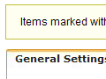
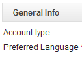
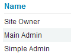
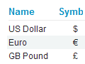
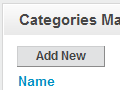
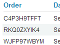
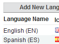
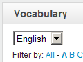
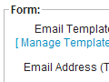
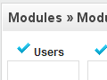

Getting Started with ApPHP Shopping Cart (for version 3.0.0 or above)
-
1. General and Site Settings.
- 1.1 Setting up site parameters.
- 1.2 Banning Emails/IP Addresses.
- 1.3 Countries Management.
- 1.4 Site Preview.
- 2.1 My Account.
- 2.2 Statistics.
- 2.3 Roles & Privileges.
- 2.4 Admins Management.
- 2.5 Customers Management.
- 3.1 Settings.
- 3.1.1 Currencies.
- 3.1.2 Catalog Settings.
- 3.2 Products Management.
- 3.2.1 Manufacturers.
- 3.2.2 Categories.
- 3.2.3 Products.
- 4.1 Delivery Settings.
- 4.2 Campaigns.
- 4.3 Orders.
- 4.4 Statistics.
- 6.1 Editing Homepage.
- 6.2 Creating new pages.
- 6.3 Editing pages.
- 6.4 Editing System pages.
- 6.5 Remove/Restore pages.
- 8.1 Email Templates.
- 8.2 Mass Mail.
- 9.1 Modules Management.
- 9.2 Pages Module.
- 9.3 Products Catalog Module.
- 9.4 Customers Module.
- 9.5 Contact Us Module.
- 9.6 Comments Module.
- 9.7 Shopping Cart Module.
- 9.8 Gallery Module.
- 9.9 Banners Module.
- 9.10 News Module.
- 9.11 Backup & Restore Module.
1. General and Site Settings.
This section describes how to manage the general settings of your site.
[top]
1.1 Setting up site parameters.
 Select Settings from General Menu. On this page you can easy change/manage the important parameters of your site. You will see there following tabs:
{kind=link}
On General Settings tab you can change:
- - Site Offline
- - Offline Message
- - Force SSL
- - SEO URLs
- - WYSIWYG Editors
- - RSS Feed Type
- - Caching
On Visual Settings Tab you can change: (change value in dropdown box to make changes for appropriate language)
- - Header Text
- - Slogan
- - Footer Text
- - Tag <TITLE>
- - Meta Tag <KEYWORDS>
- - Meta <DESCRIPTION>
On Datetime & Price Settings Tab you can change:
- - Date Format:
- - Time Zone:
- - Week Start Day:
- - Price Format:
On Email Settings Tab you can change:
- - PHP Mailer
- - E-mail address - address that used for system messages in "FROM" field
- - SMTP Settings
On Templates & Styles Tab you can change:
- - Template
On Server Info Tab you can view the important info about yuor server:
- - PHP and MySQL versions
- - Server parameters
- - etc
On Site Info Tab you can view the ranks of your site (click on "Update" button to refresh them):
- - Google and Alexa
On Cron Jobs Tab you can define using of Cron job commands
- - Cron Jobs
[top]
1.2 Banning Emails/IP Addresses.
 Select Ban List from the General Menu. On this page you can easy add/change or remove banned email or IP address.
Select Ban List from the General Menu. On this page you can easy add/change or remove banned email or IP address.
[top]
1.3 Countries Management.
Select Countries from the General Menu. On this page you can manage a list of countries with a standard MicroGrid page. You can add, edit or delete existing country. Also you may change a VAT value, priority order, activate country or define whether it's a default country or not.
[top]
1.4 Preview.
Preview allows admin to view the site without logging out. To preview the site simply click the General -> Preview link. If you want back to Administrator Panel click the [Back to Admin Panel] link that will appear instead of the slogan text.
2. Acounts Management.
This section describes how to manage system accounts.
 
{kind=link}
{kind=link}
[top]
2.1 My Account.
Log into Admin Panel, using administrator username and password. Then select My Account from Accounts Menu or from the top links of the site. You will see a page, where you can change your email, password and preferred language. To change data simply enter new values and then click on "Change" button.
[top]
2.2 Statistics.
Select Statistics option from the Accounts Menu. On this you can view general statistics of accounts on your site:
- - Users (Map Overlay)
- - Users (Registrations)
- - Users (Logins)
[top]
2.3 Roles & Privileges.
Select Roles & Privileges from Accounts Menu. You will see a page, where existing site roles are defined: Owner, Main Admin and Simple Admin. You may specify the privileges for each role by clicking on [ Privileges ] link. Privileges for Site Owner cannot be changed by anyone. Generally, the Main Admin is the role that has all rights, like a Site Owner (but may be deleted by the Owner) and a Simple Admin type is the type which has reduced rights.
[top]
2.4 Admins Management (for Main Admin only).
Select Admins from Accounts -> Admins Management menu. On this page you can manage all site administrator accounts. You may add, edit or delete existing accounts. When you create a new admin account you have to define an account type(role): Simple Admin or Main Admin. The privileges for selected role will be applied automatically for created account.
[top]
2.5 Customers Management.
Customer Groups:
Select Customer Groups from Accounts Menu. On this page you can add, edit or delete existing groups of Customers. You have to enter Group Name and description (optional). Customers can be assigned to zero, one or more groups.
Customers:
Select Customers from Accounts Menu. You will see the Customers Management page. On this page you can add, edit or delete existing accounts of Customers.
3. Products Catalog.
This section describes how to manage products catalog.
[top]
3.1 Settings.

{kind=link}
3.1.1 Currencies.
Select Currencies from Products Catalog menu. You will open the Currencies Management page. This page allows you to manage currencies, used in your Shopping Cart. On this page you can add/edit or delete existing currencies. One currency may be defined as a "default", that means it will be used as a default currency for your site. You define a rate of each currency relatively to the "default" one.3.1.2 Catalog Settings.
This page allows you to manage all settings of Products Catalog module.- Defines whether products catalog module is active or not
- Defines a maximum number of products that could be displayed on page
- Defines a view type of manufacturers side block
- Specifies whether to show categories side block or not
- Specifies whether to show manufacturers side block or not
- Specifies whether to show categories images
- Specifies the number of columns with the table of categories
- Defines whether to show Featured Products block or not
- Defines whether to show New Products block or not
- Specifies whether to show Catalog Statistics side block or not
- Specifies whether to show a number of products in categories link
[top]
3.2 Products Management.

{kind=link}
3.2.1 Manufacturers.
Select Manufacturers from Products Management menu. On this page you can manage manufacturers: add, edit or delete existing.3.2.2 Categories.
This page allows you to manage product categories. You may add/edit or delete existing category, change category display order etc. You may also translate category into other languages, installed on your site.3.2.3 Products.
Products page allows you to manage your products: add/edit or delete existing. When you add new product you have to define a related category, upload images, define a name and description for this product, define price, display order for product etc. After the product is added to the system, you may translate it's description into other languages, using [Description] link.4. Shopping Cart.
This section explains how to manage Shopping Cart, modify settings etc.

{kind=link}
[top]
4.1 Delivery Settings.
Delivery Settings page allows you to create and manage delivery methods. After new delivery methos is added you may define prices for specific country using [ Set Prices ] link.
4.2 Campaigns.
Campaigns page gives you possibility to create and manage discount campaigns for your Shopping Cart.
4.3 Orders.
Orders page gives you possibility to manage existing orders, placed by your customers. On this page you can view orders description, change orders status and filter them by date, customer name etc.
4.4 Statistics.
Statistics page allows you to track amount of orders groped by months, learn how your customers are distributed by countries and get some other useful information.
5. Menus Management.
This section describes how to manage menu categories.
[top]
5.1 Creating menu categories.
Click the Add New Menu link from Menus Management. Enter a proper name in the textbox for menu category and select a placement (left, top, right or bottom - depending on whether your template supports it) from dropdown box, then choose a language. You may define access level for the menu: Public(All) or Registered only users. Press the "Create" button to finish creating new menu category. Menu categories will appear sorted by order from smallest to highest (last added category automatically gets lowest priority).
[top]
5.2 Editing menu categories.
To edit existing menu category - click the Edit Menus from Menus Management page, then select an appropriate category from the list. Perform all changes you need and click "Save Changes" button. You may change also the display order of each category.
If you want to delete existing menu category, go to Menus Management -> Edit Menus, then select an appropriate menu from the list and click the Delete link at the right side.
6. Pages Management.
This section describes how to manage pages.
[top]
6.1 Editing Homepage.
To edit Homepage - select Edit Home Page from the Pages Management menu. Perform all changes you need and then press "Save Changes" button. You may also:
- define meta tags: title, description and keywords
- define whether to show this page in search results or not
If you need to insert/upload images - click on Insert Image icon in the toolbar of WYSIWYG editor, then upload/select your image and press "Submit" button.
[top]
6.2 Creating new pages.
Click Add New Page link in the Pages Management menu. In the Page Header text box enter a proper name for this page. Choose appropriate value from dropdown list to connect this page to required menu and enter a text in the Page Text textarea. You may also define if this page will be an article or just a link, allow/block comments, specify access level, meta tags, publish or just save changes without publishing etc. Click a "Create" button to finish the process.
If you need to insert/upload images into page text - click on Insert Image icon in the toolbar of WYSIWYG editor, then upload/select your image and press "Submit" button.
[top]
6.3 Editing pages.
To edit existing page - click Edit Pages in the Pages Management menu, then select an appropriate page from the list. Perform all changes you need and then press "Save Changes" button to save the result.
If you need to insert/upload images into page text - click on Insert Image icon in the toolbar of WYSIWYG editor, then upload/select your image and press "Submit" button.
[top]
6.4 Editing System pages.
To edit system pages - click Edit System Pages in the Pages Management menu, then select an appropriate page from the list. Perform all changes you need and then press "Save Changes" button to save the result.
If you need to insert/upload images into page text - click on Insert Image icon in the toolbar of WYSIWYG editor, then upload/select your image and press "Submit" button.
On each page you may add available modules. To do this just copy and paste into the text in appropriate place a special module tag, for example: {module:gallery}, {module:album=CODE}, {module:contact_us} etc.
[top]
6.5 Remove/Restore pages.
To remove existing page - click Edit Pages in the Pages Management menu, then select an appropriate page from the list and click Remove link from the right side. This page will be placed in the Trash.
To restore removed page click Trash from the Pages Management, find an appropriate page and click Restore link. The page will be restored. If you want to permanently delete this page, click Delete link.
7. Languages Management.
This section describes how to manage languages and define language settings.
[top]
7.1 Inserting/Editing Language.
  Click Languages in the Languages Settings menu. On this page you will see a list of existing languages. You can add new language or edit existing, change display order etc. When you add or edit existing language you have to insert a name of the language, abbreviation, text direction, icon image and some other data. When all needed data is entered - click "Create"/"Update" button to save it. You have to define one language to be a default language of the site.
{kind=link}
{kind=link}
When you add new language the system creates for it a copy of vocabulary (a list of predefined constants, used by the system) from the default language and you will need to translate them into the new language.
[top]
7.2 Editing language vocabulary.
Click Vocabulary in the Languages Settings menu. On this page you can edit all vocabulary constants of existing languages. To change a text of the constant, select an appropriate language from dropdown list, then click [Edit] link and enter a new text in the textarea. You may use Google automatic translation to help yourself in this work. To do this simply past in textarea default language text and then click on "Translate via Google" button (works for Google paid accounts only).
You may also update your vocabulary by uploading a vocabulary file (if you created such file before or already have it from the previous instalaltion). To do this simply click [Upload from File] link, then select vocabulary file, language to update and press on "Upload and Process" button.
8. Mass Mail & Email Templates.
This section describes how to work with Mass Mail & Email Templates.
[top]
8.1 Email Templates.
 To edit Email Templates go to Mass Mail & Templates -> Email Templates page. On this page you can see a list of existing email templates. Email Templates are managed with a standard MicroGrid page. You can add, delete or edit existing records. There some templates that signed as "system" templates that cannot be deleted, because they are used in the system.
{kind=link}
[top]
8.2 Mass Mail.
With the Mass Mail feature, it's possible to create and send powerful mass mail messages to registered customers and/or admins. To do this go to Mass Mail & Templates -> Mass Mail page. On this page you can select the templates, define targeting group of receivers (or send a test email) and prepare/edit the text of email message. There are some pre-defined constants you may use in the text of email that will be replaced with appropriate values before sending an email. For example: {YEAR} will be replaced with the current year in YYYY format etc.
9. Modules.
This section describes how to work with embedded modules.
[top]
9.1 Modules Management.
 Select Modules Management from the Modules Menu. On this page you can easy install/uninstall exisiting modules, for example: News, Comments, Backup etc.
{kind=link}
[top]
9.2 Pages Module.
This section describes how to work with the Pages Module.
This is a system module and the script doesn't allow to uninstall it.
[top]
9.3 Products Catalog Module.
This section describes how to work with a Products Catalog Module.
This is a system module and the script doesn't allow to uninstall it.
This page allows you to define Products Catalog settings. For more information look here.
[top]
9.4 Customers Module.
 This section describes how to work with a Customers Module.
This section describes how to work with a Customers Module.
Customers module settings.
This page allows you to define Customers settings, like:
- Specifies whether to allow adding new customers by Admin
- Defines whether confirmation (which type of) is required for registration
- Specifies whether to allow showing My Account link
- Specifies whether to allow existing customers to login
- Specifies whether to allow registration of new customers
- Specifies whether to allow customers to restore their passwords
- Specifies whether to allow changing customer password by Admin
- Specifies whether to alert admin on new customer registration
- Specifies whether to allow Remember Me feature
- Specifies whether to allow image verification (captcha)
[top]
9.5 Contact Us Module.
This section describes how to work with a Contact Us Module.
Contact Us module settings.
This page allows you to define Contact Us settings, like:
- The keyword that will be replaced with Contact Us form (copy and paste it into the page)
- The email address, that will be used to receive information
- Specifies whether to allow time delay between sending emails.
- Defines a length of delay between emails in seconds.
- Specifies whether to allow image verification
[top]
9.6 Comments Module.
This section describes how to work with a Comments Module.
Comments module settings.
This page allows you to define Comments settings, like:
- Specifies whether to allow comments to articles
- Type of users, who can post comments
- The maximum length of comments
- Specifies whether to allow image verification (captcha)
- Defines how much comments will be shown on one page
- Specifies whether to allow pre-modaration for comments
- The maximum pending time for deleting of comment in minutes
Comments Management page.
On this page admin can manage comments: approve, deny or delete them.
[top]
9.7 Shopping Cart Module.
This section describes how to work with a Shopping Cart Module.
Shopping Cart module settings.
This page allows you to define Shopping Cart settings, like:
- Defines whether shopping cart is active or not
- Specifies whether to allow 'On-line Order' payment type
- Specifies whether collecting of credit card info is required for 'On-line Orders'
- Specifies whether to allow 'PayPal' payment type
- Specifies PayPal (business) email
- Specifies whether to allow '2CO' payment type
- Specifies 2CO Vendor ID
- Specifies whether to allow 'Authorize.Net' payment type
- Specifies Authorize.Net API Login ID
- Specifies Authorize.Net Transaction Key
- Specifies default payment processing system
- Specifies default VAT value for order (in %)
- Specifies whether to allow sending a copy of order to admin
- Defines whether to allow inventory control feature (units in stock) or not
- Defines a timeout for 'preparing' orders before automatic deleting (in hours)
- Specifies which mode is turned ON for Shopping Cart
- Specifies customer access level to view product prices
- Specifies the type of order numbers
[top]
9.8 Gallery.
This section describes how to work with a Gallery Module.
Gallery Settings.
This page allows you to define Gallery settings, like:
- The keyword that will be replaced with gallery
- The keyword that will be replaced with a certain album images
- Allowed types of Gallery
- Album icon width
- Album icon height
- Number of album icons per line
- Allowed types of Video Gallery
- Defines a wrapper type for gallery
- Specifies whether to show count of video under album name
Gallery Management.
The Gallery module allows you to create and manage gallery albums on your site. To do this go to Modules -> Gallery -> Gallery Management. On this page you will see a list of existing albums. Albums are managed with a standard MicroGrid page. You can add, delete or edit albums info. To upload/delete images from the certain album - click Upload link.
[top]
9.9 Banners.
This section describes how to work with a Banners Module.
Banners Settings.
This page allows you to define Banners settings, like:
- Whether banners module is active or not
- Type of banner rotation
- Banners rotation delay in seconds
- Using of HTML in slideshow captions or not
Banners Management.
The Banners module allows you to create, upload and manage banners on your site. To do this go to Modules -> Banners -> Banners Management. On this page you will see a list of existing banners, that are managed with a standard MicroGrid page. You can add, delete or edit records, upload banner images.
[top]
9.10 News Module.
 This section describes how to work with the News Module.
This section describes how to work with the News Module.
News Settings.
This page allows you to define News settings, like:
- How many news will be shown in the News block
- Length of news header in block
- Using of RSS channel for news
- Defines whether to show News side block or not
- Defines whether to show Newsletter Subscription block or not
Creation and Management.
The News module allows you to create and manage news on your site. To do this go to Modules -> News -> News Management. On this page you will see a list of previously added news. News are managed with a standard MicroGrid page. You can add, edit or delete news records.
There are two type of news that may be created: news or events. If you create event, visitors could register to this event via online form. All registered users may be viewed via Modules -> News -> News Management -> events()
Subscription Management (Newsletter Subscription).
The News module allows you to create and manage Mailing Lists on your site. You may place a Subscription block on the Front-End of your site and allow visitors to subscribe for news or manually add/remove subscribers via Modules -> News -> Subscription Management page. To send newsletter for subscribers go to Mass Mail -> Templates -> Mass Mail page, then select from Email Address dropdown box "Newsletter Subscribers", prepare the newsletter text and click the "Send" button.
[top]
9.11 Backup & Restore Module.
 Creating a backup.
Creating a backup.This script allows you easily create backup of your database. To do this go to Modules -> Backup & Restore -> Backup Installation. On this page you can see a list of existing backups. If you want to add new backup click on "Backup" button. After the backup is complete it will appear in the list below.
Restoring from backup.
To restore database from existing backup go to Modules -> Backup & Restore -> Backup Restore page and look on the list of existing backups. Select a backup you want to restore and click on "Restore" link at the right side. After backup restore is complete, refresh the site or re-login.